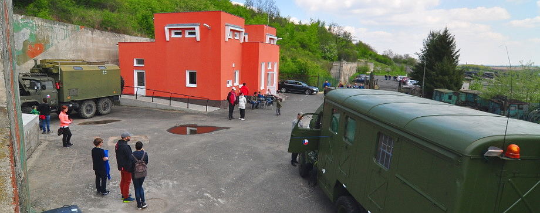
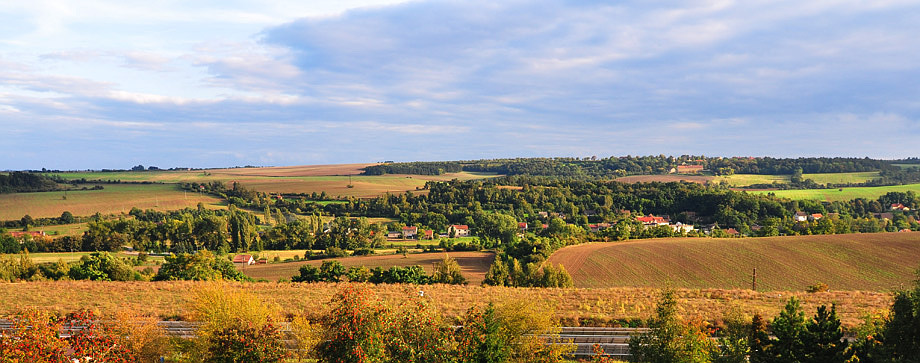

Bunkr Drnov - Muzeum studené války a protivzdušné obrany
Přijďte navštívit jeden z největších zpřístupněných bunkrů v ČR a nasát atmosféru období studené války v tehdejším Československu. Provedeme vás rozsáhlým podzemím o velikosti 5500m2 a seznámíme vás s tím, jak objekt fungoval a jaké bylo jeho vybavení pro případ válečného ohrožení. Dále si pak sami zblízka prohlédnete sovětskou raketovou techniku a nahlédnete do sálů bojového velení, odkud byla řízena.
Muzeum a expozice
Muzeum studené války a protivzdušné obrany se nachází v podzemním objektu, který dříve armádě sloužil jako Sdružené velitelské stanoviště 71.protiletadlové raketové brigády a 56.radiotechnického praporu. Objekt byl postaven v letech 1981 až 1984. Dne 1. května 1985 začíná armáda objekt aktivně používat. Až do konce provozu v roce 2003 se odsud nepřetržitě zajišťovala bezpečnost vzdušného prostoru nad Prahou. Následuje odtajnění a převod objektu spolku okolních obcí. V roce 2009 začíná občanské sdružení Bunkr Drnov s přípravami pro zpřístupnění objektu veřejnosti.
Celý několikapatrový objekt je vybaven původním technickým zařízením, které je zcela unikátní a velmi dobře zachovalé. V části objektu, která prošla rekonstrukcí, je umístěna expozice raketové techniky. V současné době si zde návštěvníci mohou zblízka prohlédnout sovětské rakety systémů S-75 Volchov, S-125 Něva, S-200 Vega a 2K12 Kub. V expozici se nachází i "pradědeček" protivzdušných obranných prostředků - dvojkanón PLDvK vz. 53. Mimo toho jsou také vystaveny drobnější exponáty včetně protiletadlových raket OSA a STRELA.
Prohlídky
Nabízíme vám prohlídku rozsáhlých a dříve přísně utajovaných prostor podzemního velitelského stanoviště protivzdušné obrany Prahy.
V první části prohlídky vás odborný průvodce provede technologickým zázemím objektu, které sloužilo pro udržení bojeschopnosti při různé vnější chemické a radiační situaci, a ukáže, jak pracují jednotlivé systémy zajištění životaschopnosti obsluh a chodu techniky.
V druhé části prohlídky navštívíte sály bojového velení a bývalý voják, který v bunkru sloužil téměř 10 let, vás seznámí s tím, jak protivzdušná obrana fungovala jako celek a podá výklad k sovětské raketové technice používané k obraně vzdušného prostoru Československé, později České republiky. Zblízka si budete moci prohlédnout kompletní rakety komplexů S-75, S-125, S-200, které jsou umístěny v naší unikátní expozici.
Délka prohlídky je cca 65 - 75 minut.
Vstupné
| Děti do 6 let | zdarma |
|---|---|
| Děti od 6 do 15 let | 70 Kč |
| Dospělí | 100 Kč |
| Senioři nad 65 let | 70 Kč |
| Mimořádná prohlídka pro skupiny | více info |
Nejbližší termíny prohlídek
Pravidla provozu
- otevřeno je pouze v termínech uvedených v rezervačním formuláři.
- prohlídka bude přednostně umožněna návětěvníkům s rezervovaným místem na prohlídce
- maximální velikost skupiny je 40 osob
- během prohlídek je otevřené návštěvnické centrum, kde je možnost studeného i teplého občerstvení - guláš, pivo, limonáda, zmrzlina, káva, čaj, sladkosti, atp.
- příjezdová komunikace k objektu je otevřena hodinu před a hodinu po prohlídkách.
Návštěvníci jsou povinni řídit se návštěvním řádem, který je k nahlédnutí na místě. Doporučujeme teple se obléci, teplota uvnitř bunkru je celoročně cca 9-11°C. Během prohlídky je možno pořizovat fotografie pro osobní potřebu. Prohlídka bunkru není vhodná pro děti do 6ti let. Domácím mazlíčkům vstup nepovolujeme.
Skupinová prohlídka
Pokud máte zájem o prohlídku v jiném termínu, než který je uveden ve formuláři, nabízíme možnost objednat mimořádnou skupinovou prohlídku dle Vašich individuálních časových požadavků. Počet účastníků prohlídky může být 1 - 30 osob a délka prohlídky je cca 60 minut.
Základní cena za takovouto skupinovou prohlídku je 3000 Kč - vždy se platí jako za plně obsazenou skupinu. Pro více informací nás kontaktujte emailem.
Prohlídky pro školy
Nabízíme také prohlídky pro školy, které mohou být uzpůsobené vašim konkrétním potřebám. Kontaktujte nás emailem pro více informací.
Ostatní služby
V našem Návštěvnickém centru se můžete občerstvit teplými a studenými nápoji, naobědvat se, či jen něco malého zakousnout před prohlídkou bunkru. Jsou zde umístěny i bezbariérové toalety, k dispozici je parkoviště pro cca 40 vozů.
O nás
Sdružení Bunkr Drnov vzniklo v roce 2009 a ve spolupráci s královským městem Slaný a obcemi Žižice, Knovíz, Zvoleněves a Podlešín usiluje o využití těchto netradičních prostor pro vzdělávací a kulturní aktivity určené široké veřejnosti. Mezi naše hlavní cíle patří vybudování muzea Studené války a protivzdušné obrany v prostorách podzemního bunkru.
Celý projekt je financován z příspěvků, dotací a darů. Náklady na údržbu a úpravy nutné pro vstup veřejnosti jsou vzhledem k velikosti a povaze objektu značné. Proto budeme velice rádi za Vaši podporu. Jsme schopni na oplátku nabídnout Vaše reklamní zviditelnění, které spatří tisíce návštěvníků ročně.
Uvítáme nabídky vojenské techniky, která pochází z doby působení objektu. Část vybavení byla odvezena armádou při opuštění objektu a jejich zpětné získání by pomohlo autenticitě prostoru. Taktéž uvítáme fotografické materiály a videodokumentaci, jakkoliv se vztahující k historii místa či konkrétních objektů.
- E-mail: info@bunkr-drnov.cz
Diskusní fórum je na stránkách spřáteleného webu forum.valka.cz.
Kde nás najdete
Najdete nás 5km od města Slaný.
Příjezdová komunikace: 50°14'11.994N, 14°10'21.589E.
Parkoviště u objektu: 50°13'45.51"N, 14°9'38.61"E.
info@bunkr-drnov.cz
Poštovní adresa o.s.:
Bunkr Drnov, o.s.
Strakonická 12
Praha 5 – Lahovičky
15900
IČ: 22832092
DIČ: CZ22832092
Bankovní spojení: 235210854/0300